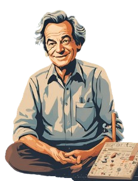
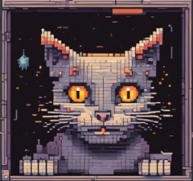

O qubit (quantum bit) é a unidade fundamental de informação na computação quântica, similar ao bit na computação clássica, mas com a diferença de que pode representar simultaneamente 0 e 1 devido à superposição. Isso permite que os qubits realizem múltiplos cálculos ao mesmo tempo, aumentando significativamente a capacidade de processamento.
Richard Feynman, físico renomado, é considerado o pai da computação quântica devido às suas ideias revolucionárias nos anos 1980. Ele foi o primeiro a sugerir que sistemas quânticos poderiam ser usados para simular outros sistemas quânticos de forma mais eficiente do que os computadores clássicos. Suas teorias sobre a natureza quântica das partículas inspiraram o desenvolvimento de algoritmos quânticos e a criação de computadores quânticos, transformando a computação como conhecemos.
A superposição é um \princípio quântico onde uma partícula pode estar em múltiplos estados ao mesmo tempo, até ser observada. O famoso experimento mental do gato de Schrödinger ilustra isso: um gato dentro de uma caixa pode estar simultaneamente vivo e morto até ser observado. No contexto dos qubits, isso significa que eles podem representar 0 e 1 ao mesmo tempo, permitindo cálculos paralelos. A superposição é, portanto, essencial para a potência da computação quântica.
A construção de computadores quânticos envolve criar sistemas que possam controlar e manipular qubits de forma precisa. Isso é feito utilizando tecnologias como circuitos supercondutores, trampas de íons ou chips fotônicos , cada uma com seus desafios de estabilidade e coerência quântica. A supremacia quântica é alcançada quando um computador quântico resolve uma tarefa além da capacidade dos supercomputadores clássicos, como a demonstração feita pelo Google em 2019. Esse marco sugere que a computação quântica pode, em breve, transformar setores como criptografia e simulação de materiais, desafiando os limites da computação convencional.